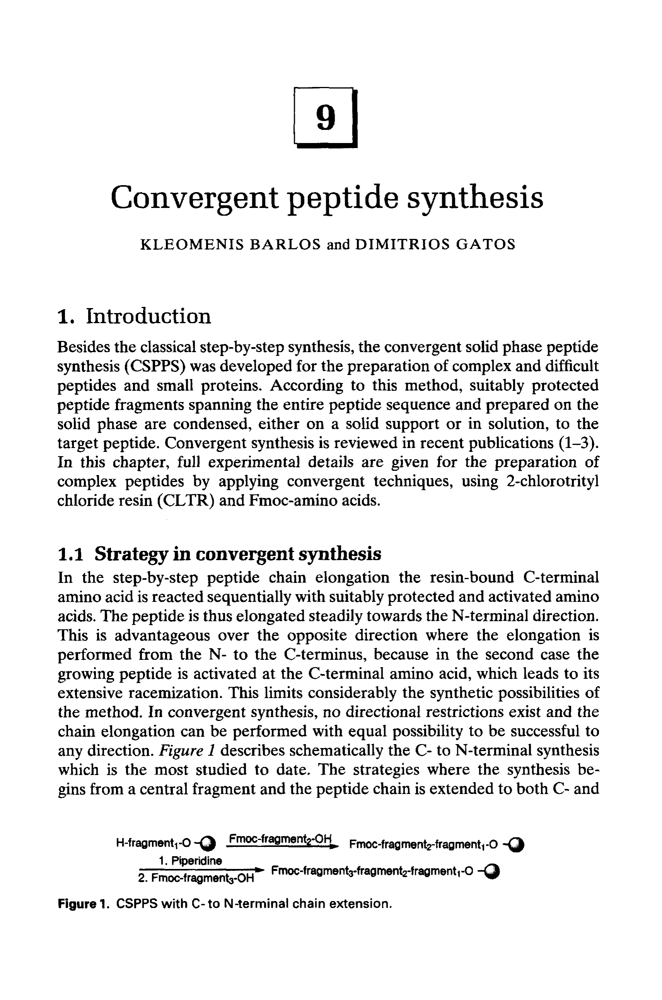
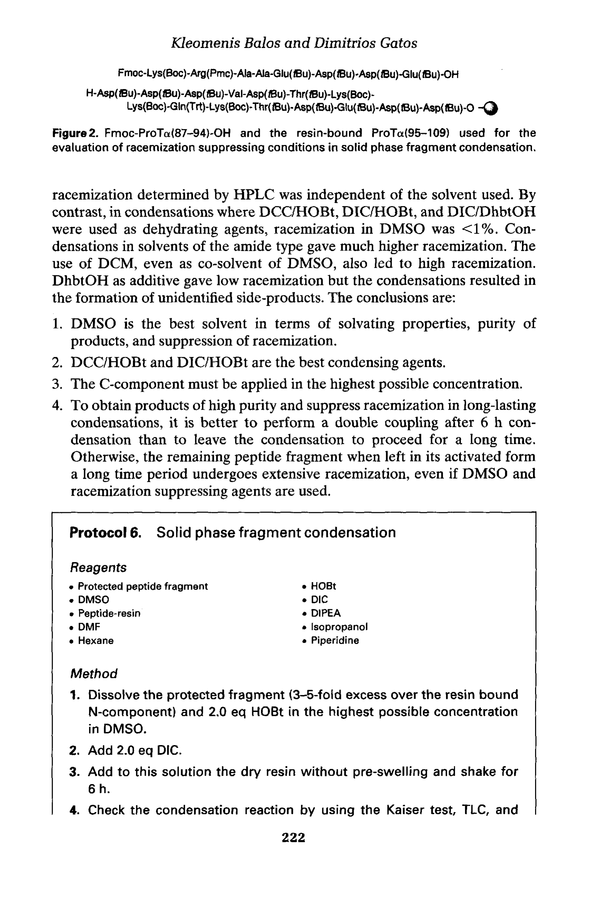
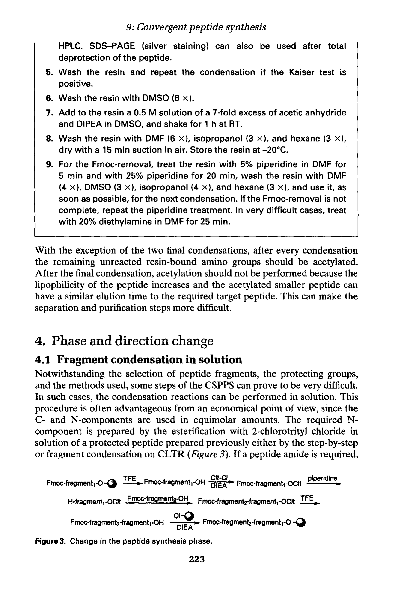
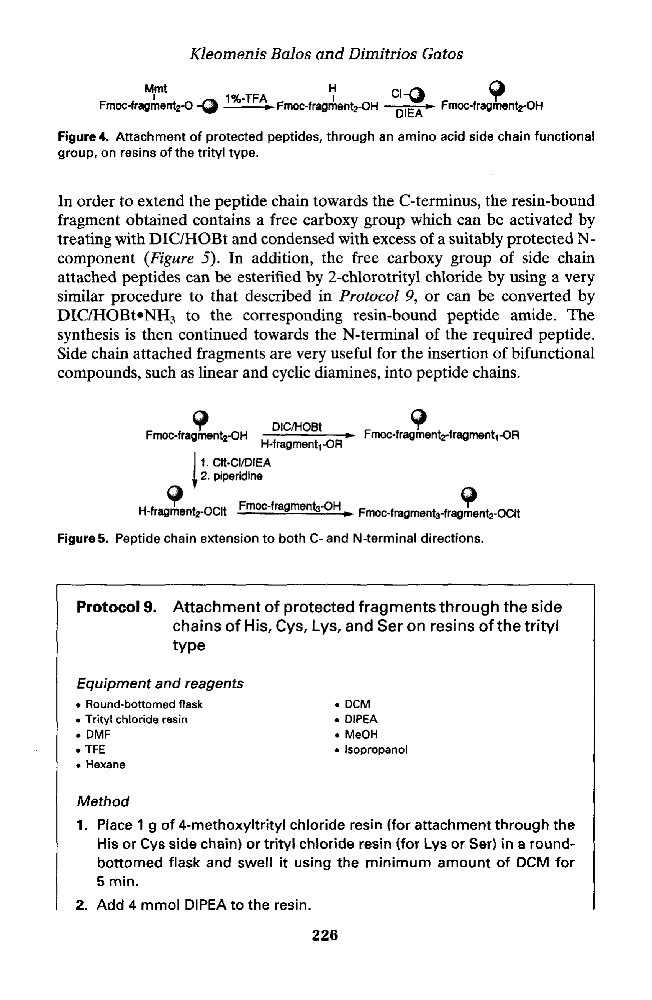

1. 引言：从逐步合成到汇聚式策略
第九章 汇聚式肽合成
Convergent Peptide Synthesis
作者：Kleomenis Barlos & Dimitrios Gatos
━━━━━━━━━━━━━━━━━━━━━━━━━━━━━━━━━━━━━━━━
1. 引言：从逐步合成到汇聚式策略
1.1 逐步合成的局限性
在固相多肽合成（SPPS）中，传统的逐步合成（step-wise synthesis）策略是从C端逐个残基向N端延伸。这种方法对于中短链肽（通常≤30个氨基酸残基）非常有效，但当肽链长度超过约50个残基时，会遇到越来越严重的问题：
累积偶联不完全：每步偶联反应即便达到99.5%的收率，50步之后总收率仅约78%。实际操作中每步收率往往低于99%，导致产物纯度急剧下降。
截断序列（truncated sequences）和缺失序列（deletion sequences）积累：未反应的氨基在后续步骤中可能继续参与反应，产生难以分离的杂质。
树脂上的分子间聚集（aggregation）：长肽链在树脂上容易形成二级结构（如β-sheet），导致氨基被埋藏，偶联效率下降。
溶剂化和试剂扩散受限：树脂内部空间位阻增大，反应试剂难以到达所有反应位点。
因此，对于长肽（>50个残基）和蛋白质的化学合成，逐步合成策略往往无法提供足够纯度的产物。这促使研究者发展了汇聚式合成（convergent synthesis）策略。

Figure 1. 汇聚式SPPS中C→N方向的链延伸策略示意图
1.2 汇聚式合成的基本概念
汇聚式合成的核心思想是：将目标肽链分为若干个较短的片段（protected peptide fragments），分别合成并纯化这些片段，然后再通过片段缩合（fragment condensation）将它们连接成完整的目标肽。这种策略类似于"积木搭建"。
汇聚式合成与逐步合成的比较：
| 特征 | 逐步合成（Step-wise） | 汇聚式合成（Convergent） |
|---|---|---|
| 适用肽长度 | ≤ 30-40 残基 | 50-100+ 残基 |
| 杂质累积 | 线性累积，越长越严重 | 片段独立纯化，杂质不带入 |
| 纯化策略 | 最终产物一次性纯化 | 片段分别纯化 + 最终纯化 |
| 关键瓶颈 | 偶联效率、聚集效应 | 片段缩合效率、消旋化控制 |
2. 2-氯三苯基氯（2-CTC）树脂：汇聚式合成的基石
2.1 结构与特性
2-氯三苯基氯树脂（2-chlorotrityl chloride resin，简称2-CTC树脂）是实现汇聚式肽合成的关键工具。其核心结构是在聚苯乙烯-二乙烯苯（PS-DVB）骨架上连接了2-氯三苯甲基功能基团。
2-CTC树脂的关键特性：
极温和的切割条件：仅需1% TFA的DCM溶液即可将肽链从树脂上切割下来，与Wang树脂等需要50-95% TFA形成鲜明对比。
完整保留侧链保护基：所有酸敏感的侧链保护基（Boc、tBu、Trt、Pbf等）在1% TFA下均不受影响——这是获得保护肽片段的前提。
低消旋化上载：第一个氨基酸通过羧基与三苯甲基形成酸不稳定酯键，无需强力活化，几乎不消旋。
可逆性：酯键在弱酸下可逆，但在中性/碱性条件下足够稳定，可承受完整SPPS循环。
2.2 上载条件与注意事项
上载（loading）通常将Fmoc-氨基酸溶于DCM/DMF中，加DIEA作碱，室温反应1-2h。反应后用MeOH封端未反应的氯。上载量通常控制在0.3-0.8 mmol/g。
上载不需要预活化（pre-activation），氨基酸直接与树脂上的氯反应形成酯键；
对于C端Cys、His、Pro，消旋化风险较高，需特别控制；
上载后必须用MeOH封端（capping），否则会产生截断序列杂质。
3. 保护肽片段的制备
3.1 制备流程
保护肽片段（protected peptide fragment）的制备是汇聚式合成的核心步骤。流程如下：
| 步骤 | 操作说明 |
|---|---|
| 1. 树脂上载 | 将C端第一个氨基酸加载到2-CTC树脂上 |
| 2. SPPS延伸 | 按照标准Fmoc-SPPS流程逐个延伸氨基酸残基 |
| 3. 最终脱保护 | 用20% piperidine/DMF脱除N端Fmoc |
| 4. 温和切割 | 用1% TFA/DCM切割，保留所有侧链保护基 |
| 5. 纯化 | 通过沉淀、HPLC或凝胶过滤纯化 |
3.2 保护肽片段的特性
3.2.1 溶解性
保护肽片段因含大量疏水保护基（tBu、Pbf、Trt等），水溶性极差，但可溶于DMF、NMP、DMSO等有机溶剂。疏水特性使保护肽可以从DCM/乙醚中沉淀纯化。
3.2.2 纯化方法
乙醚沉淀：切割液浓缩后滴入冰冷乙醚，保护肽沉淀析出；
硅胶柱层析：适合较短片段（<15残基）；
制备型RP-HPLC：使用C4或C8柱（保护肽太疏水，C18保留过强）；
凝胶过滤（gel filtration）：适合较大片段。
3.2.3 纯度鉴定
质谱（MS）确认分子量；
分析型HPLC评估纯度；
氨基酸分析（AAA）确认组成。
4. 片段缩合（Fragment Condensation）策略
4.1 固相片段缩合
固相片段缩合是最常用的汇聚式策略：将C端片段锚定在树脂上（受体片段），与游离的N端保护肽片段（供体片段）偶联。
Step 1. 将C端片段通过2-CTC树脂固定；
Step 2. 脱除C端片段N端Fmoc；
Step 3. 将N端保护肽片段C端羧基用缩合剂活化；
Step 4. 活化的N端片段与树脂上C端片段游离氨基偶联；
Step 5. 溶剂洗涤去除未反应片段和副产物；
Step 6. 重复以上步骤连接更多片段。
4.2 溶液相片段缩合
溶液相片段缩合在脱离树脂的条件下进行。缺点是反应后需从过量试剂和未反应原料中分离产物，保护肽纯化困难，因此实际应用较少。
4.3 消旋化（Racemization）风险与控制
片段缩合中最严重的问题之一是消旋化。片段C端氨基酸在活化时，α-质子可被碱夺取形成烯醇中间体，发生构型翻转。
4.3.1 减少消旋化的策略
| 策略 | 说明 |
|---|---|
| Gly/Pro连接位点 | Gly无手性中心不可能消旋；Pro α-质子受环约束消旋低 |
| HOAt类添加剂 | HOAt比HOBt更能有效抑制消旋化 |
| HATU等试剂 | HATU活化效率高且消旋化低，是片段缩合首选 |
| 降低反应温度 | 低温（0°C→室温梯度）减少消旋化 |
关键原则：设计汇聚式合成路线时，应优先选择Gly或Pro作为连接位点（junction site）。如无法避免，需用最强消旋化抑制条件，并通过手性HPLC或Marfey's试剂确认构型纯度。
5. 应用实例：Protaflamin (ProTa) 片段合成
本章以protaflamin（ProTa）为例展示汇聚式合成。ProTa是具生物活性的肽，作者将其分为多个片段分别合成后组装。

Figure 2. Fmoc-ProTa片段和树脂结合ProTa片段的结构示意图
5.1 合成策略设计
将ProTa序列合理分割，分割位点选在Gly或Pro残基处；
每个片段单独在2-CTC树脂上通过Fmoc-SPPS合成；
用1% TFA/DCM温和切割获得保护肽片段；
纯化后依次进行片段缩合。

Figure 3. 肽合成各阶段的变化——从逐步延伸到片段组装
5.2 合成中的关键问题
片段溶解性：保护肽在DMF中溶解度有限，需优化溶剂体系（DMF/NMP/DMSO混合）；
偶联监控：片段缩合位阻大，需Kaiser茚三酮试验或溴酚蓝试验监控；
双重偶联（double coupling）：困难位点可进行两次偶联提高收率；
片段过量：通常1.5-3倍过量N端片段推动反应完全。
6. 侧链锚定策略（Side-Chain Anchoring）
6.1 原理
侧链锚定是汇聚式合成的巧妙变体：利用氨基酸侧链功能基团（Asp/Glu的羧基、Lys的ε-氨基、Ser/Thr/Tyr的羟基等）将肽锚定到三苯基树脂上，实现肽链双向延伸（bidirectional elongation）。

Figure 4. 通过侧链功能基团将保护肽锚定到三苯基树脂上的策略
6.2 三苯基树脂选择
2-CTC树脂：最常用，适合通过羧基锚定（Asp/Glu侧链）；
三苯基树脂（trityl chloride resin）：酸敏感性更高，适合羟基或巯基锚定（Ser/Thr/Tyr/Cys）；
4-甲基三苯基树脂：酸稳定性适中。
6.3 双向延伸策略
C→N方向：与常规SPPS相同，Fmoc化学逐个延伸；
N→C方向：使用特殊策略向C端延伸——反复Boc脱保护和C端活化偶联；
特别适合含中间区域特殊修饰（磷酸化、糖基化）的肽链合成。

Figure 5. 肽链双向延伸（bidirectional elongation）策略示意图
6.4 优势与局限
| 方面 | 优势 | 局限 |
|---|---|---|
| 灵活性 | 从肽链中间向两端延伸 | 需选择合适侧链锚定位点 |
| 适用范围 | 中间含特殊修饰的肽 | 并非所有残基都适合锚定 |
| 切割 | 温和条件释放产物 | 侧链保护基策略需重新设计 |
本章要点总结
| ▸ 逐步合成在>50残基时纯度急剧下降，汇聚式策略通过"分而治之"解决这一瓶颈。 ▸ 2-CTC树脂是汇聚式合成的核心工具：1% TFA即可切割，保留全部侧链保护基。 ▸ 保护肽片段通过2-CTC树脂合成→温和切割→乙醚沉淀/HPLC纯化获得。 ▸ 片段缩合首选固相策略：C端片段锚定在树脂上，与N端片段偶联。 ▸ 消旋化是片段缩合最大风险：优选Gly/Pro作连接位点，用HATU/HOAt抑制。 ▸ 侧链锚定策略通过侧链功能基固定到三苯基树脂，实现双向延伸。 ▸ 汇聚式合成已被成功应用于多种生物活性肽和蛋白质的化学合成。 |
|---|